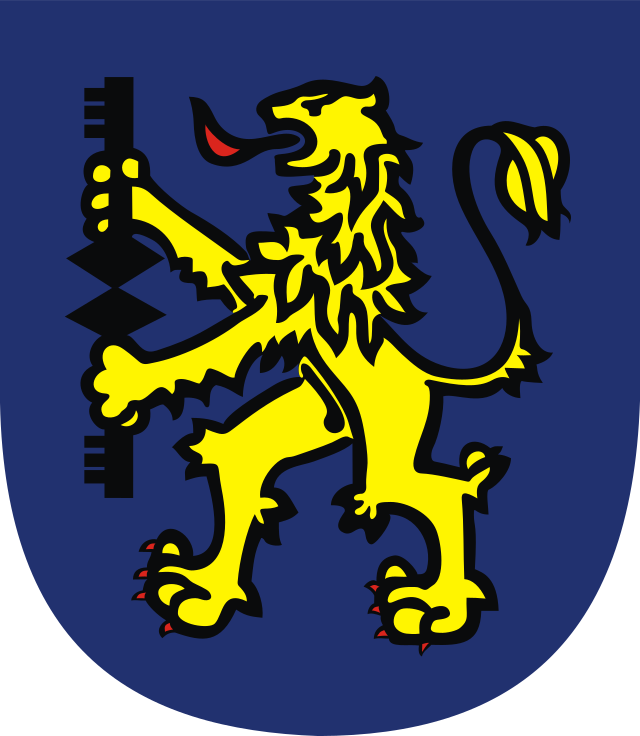
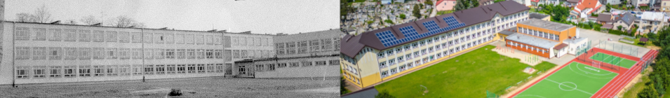

Miejski Zespół Szkół nr 5
im. ks. Jana Twardowskiego
w Gorlicach

Jan Jakub Twardowski przyszedł na świat 1 czerwca 1915 roku w Warszawie, przy ulicy Koszykowej 20.
Chrzest przyjął w kościele św. Aleksandra na Placu Trzech Krzyży.
Ojciec, Jan Twardowski, przez całe życie był związany z koleją. Po zakończeniu I wojny światowej
pracował
jako zawiadowca zakładów parowozowych Warszawa Główna, w roku 1932 awansował na stanowisko kierownika
Działu Napraw Wagonów Osobowych w warsztatach kolejowych w Pruszkowie–Żbikowie. W 1936
został radcą w Ministerstwie Komunikacji. Był bardzo oddany rodzinie, wręcz zakochany w swych
dzieciach.
Matka pisarza, Aniela Konderska była absolwentką znanej w Warszawie pensji dla panien należącej do
powieściopisarki i patriotki Jadwigi Teresy Papi. Wyszła za mąż mając 20 lat, nie pracowała zarobkowo,
cała swoją energie poświęcała czwórce dzieci i prowadzeniu domu.
Jan miał dwie starsze siostry: Halinę i Lucynę oraz jedną młodszą siostrę Marię. Jego rodzinę można
określić jako inteligentną i głęboko wierzącą.
Po wybuchu I wojny światowej, na mocy rosyjskich władz kolejowych, zadecydowano o przymusowej ewakuacji
rodzin kolejarzy w głąb Rosji. Do polski powrócili dopiero po trzech latach, 13 lipca 1918.
W 1922 rozpoczął naukę w szkole podstawowej, a do 1927 roku uczęszczał do II Państwowego Gimnazjum
Męskiego im. Tadeusza Czackiego w Warszawie, do klasy matematyczno–przyrodniczej. Tam od 1933 do
1935 roku należał do grona kolegów redagujących wspólnie pismo młodzieży gimnazjalnej „Kuźnia Młodych”,
w której prowadził dział literacki. Dzięki prowadzeniu tej gazetki, w 1933 roku miał miejsce jego debiut
poetycki i prozatorski. Duże znaczenie miał też prowadzony przez niego „Poradnik Literacki” w którym
recenzował i pouczał, często bardzo lapidarnie i nieco ironicznie, lecz szczerze i z chumorem, młodych
adeptów pióra, nadsyłających swe juwenalia do oceny i ewentualnej publikacji. W roku 1935 nakładem
„Kuźni Młodych” wydano Antologię współczesnej poezji szkolnej, w której znalazły się trzy poezje
autorstwa przyszłego kapłana. W szkole poznał wielu uzdolnionych kolegów m.in. Kazimierza Brandysa,
Tadeusza Różewicza, Pawła Hertza, Jana Kotta. Egzamin dojrzałości zdał w 1936 roku. Rok później ukazał
się pierwszy tomik jego wierszy pt. „Powrót Andersena”, nawiązujący do poezji Skamandrytów.
W 1937 rozpoczął studia polonistyczne na Uniwersytecie Warszawskim. Pomimo iż uzyskał absolutorium
(zdanie wszystkich egzaminów wymaganych programem studiów) Twardowski nie zdążył ukończyć studiów
ponieważ wybuchła II wojna światowa. Pracę magisterską obronił dopiero w 1947 roku.
W czasie II wojny światowej zaginął cały nakład „Powrotu Andersena”. Jan Twardowski nie należał
formalnie do Armi Krajowej, jednakże z pewnością uczestniczył w działaniach konspiracycjnych. Podczas
Powstania Warszawskiego przyłączył się do oddziałów Armi krajowej m.in. na Woli. Wojna i barbarzyństwo
III Rzeszy (m.in. zniszczenie domu rodzinnego Pisarza) przyczyniły się w znaczynym stopniu do podjęcia
decyzji o kapłaństwie. Odkrycie powołania miało miejsce w roku 1943, postanowienie okrzepło w związku z
przeżyciami z roku 1944. Po latach Jan Twardowski wspominał, że przed 1939 rokiem Kościół wydawał
się ciasny. Raziła go nietolerancja względem niektórych nniejszości narodowych (chodzi zapewne
przede wszystkim o Żydów, żydowskie pochodzenie miało wielu nauczycieli i kolegów Pisarza).
Podkreślał, że w czasie okupacji spotykał się z księżmi przerażonymi losem Żydów, którzy chcieli im
pomagać. Wojna sprawiła, że Twardowski zbliżył się do Kościoła.
W marcu roku 1945, zatem przed zakończeniem wojny, Jan Twardowski rozpoczął naukę w warszwskim
Seminarium Duchownym. Działającym aż do odbudowania w sierpniu 1945 roku jego siedziby w podwarszawskim
Czubinie. Kształcił sie tam przez trzy lata z przerwami, by 4 lipca 1948 przyjąć święcania kapłańskie.
Równolegle zdobył tytuł zawodowy magistra filologi polskiej za pracę Godzina myśli. Zaraz po
studiach w seminarium duchownym przybył do parafii w położonym pod Pruszkowem Żbikowie. Posługiwał tam
jako wikary przez trzy lata, zajmując się m.in. nauką religii dzieci upośledzonych w tamtejszej
Państwowej Szkole Specjalnej oraz w Państwowym Domu Dziecka w pobliskiej wsi Koszajec. Poetyckim
upamiętnieniem tych lat były elegijne utwory Do moich uczniów oraz Pożegnanie wiejskiej
parafii.
W roku 1952 rozpoczął posługę w Warszawie: najpierw w położonym na Żoliborzu kościele św. Stanisława
Kostki, potem w parafii Matki Boskiej Nieustającej Pomocy na Saskiej Kępie oraz przy parafii Wszystkich
Świętych przy Placu Grzybowskim. Rok 1959 przyniósł pierwszy po ponad dwóch dekadach zbiór „Wiersze”,
określany często jako powtórny debiutu. Tomik ukazał się w skromnej formie, w jednym składanym wydaniu z
„Niepowrotnymi godzinami” księdza Pawła Heintscha.
W roku 1959 ksiądz Twardowski został rektorem należącej do Sióstr Wizytek warszawskiej świątyni pod
wezwaniem św. Józefa, Oblubieńca Niepokalanej Bogurodzicy Maryi, gdzie posługiwał aż do śmierci.
Wygłaszał tam kazania dla najmłodszych, pracował jako katecheta dzieci i młodzieży oraz duszpasterz
środowisk twórczych. Dzieciom zadedykował swe późniejsze zbiory , w tym „Zeszyt w kratkę”, „Rozmowy z
dziećmi i nie tylko z dziećmi” oraz „Patyki i patyczki”. Również kazania dla dorosłych stały się szybko
popularne, zaś przyklasztorne mieszkanie Księdza odwiedzali liczni goście, nie tylko ci szukający
porady duchownej.
O głębokiej wiedzy i zainteresowaniach Jana Twardowskiego świadczy to, że przez wiele lat był wychowawcą
i wykładowcą w warszawskim seminarium metropolitalnym, przyczyniając się tym samym do odbudowy szeregów
wyniszczonych wojną i prześladowanych okupantów duchowieństwa polskiego. W roku 1956 na Zjeździe Pisarzy
w Częstochowie poznał Karola Wojtyłę. Przyszły papierz wyznaczył Poetę na przewodniczącego zjazdu
polonistów wykładających klerykom literaturę.
Kierując się doktryną Kościoła i przykładem świętych kapłanów (często tworzących poezję religijną i
teksty liturgiczne), za najważniejsze w swym życiu Ksiądz Twardowski uważał powołanie i obowiązki
wynikające z sakramentu święceń, a zatem sprawowanie sakramentów, modlitwę i głoszenie Ewangelii.
Pomagało mu w tym doskonałe pióro i łatwość prowadzenia rozmowy nawet na najbardziej wymagające tematy
teologiczne, filozoficzne i historyczne.
W listopadzie 1993 Jan Twardowski przeszedł pierwszy atak serca. Kolejny zawał miał miejsce na
początku 2005 roku. Pisarz znalazł się na oddziale kardiologii szpitala klinicznego przy ulicy Stefana
Banacha. W czerwcu tego samego roku obchodził swoje urodziny. Dziennikarze pytali czy cieszy się z tej
okazji, on zaś z przekorą i humorem odpowiadał: nie, ale będę udawał.
29 listopada po raz ostatni celebrował liturgię w swym mieszkaniu. Następnego dnia znalazł się w
klinice. Opuścił ją na krótko lecz szybko musiał wracać na oddział kardiologiczny. Do szpitalnego łóżka
pielgrzymowali krewni i przyjaciele, czytelnicy z prośbami o autograf oraz wydawcy starający się o
ostatnią zgodę na druk wierszy. O trzeciej po południu odmawiano wraz z Poetą koronkę do Miłosierdzia
Bożego. W nocy z 17 na 18 stycznia przy łóżku czuwał brat Marian. Zgodnie z jego relacją, pół godziny
po północy kapłan zaczął modlić się, tak jak w liturgi wymieniał nazwiska osób, ktore poznał w swoim
życiu. Po jakimś czasie powtarzał tylko słowa „Jezu, ufam tobie”, dodając niekiedy „wiem, że umieram”. O
czwartej brat Marian zaalarmował lekarzy. Po reanimacji Jan Twardowski poprosił o wodę i polecił, by
brat wziął zeszyt i zapisywał każde jego słowo. Aż do wpół do dziesiątej dyktował swój ostatni wiersz.
Po południu ksiądz Aleksander Seniuk, posługujący w kościele Wizytek, rozpoczął udzielanie Sakramentu
Chorych.
Jan Twardowski zmarł 18 stycznia 2006 roku w szpitalu klinicznym przy ul. Banacha. Pogrzeb odbył się 3
lutego w Bazylice Świętego Krzyża. Kapłan spoczął w krypcie Świątyni Opatrzności Bożej. Co prawda
sprzeciwiał się takiemu zaszczytowi, gdyż chciał być pochowany obok matki i ojca na Powiązkach
Wojskowych, jednak w testamencie — bacząc na kapłański ślub posłuszeństwa — ostateczną
decyzję pozostawił zwierzchnikom. O pochówku w miejscu dla zasłużonych zadecydował osobiście prymas
Polski, kardynał Józef Glemp.
Pośmiertnie Jan Twardowski otrzymał Krzyż Komandorski Orderu Odrodzenia Polski (2006). Jeszcze za życia
uhonorowano go m.in. medalem Polonia Mater Nostra Est i orderem Ecce Homo (oba w r. 1999), a kilka lat
wcześniej Orderem Uśmiechu (1996). Oprócz nagród wspomianych w pierwszej części naszego tekstu, Poeta
został laureatem Nagrody Ikara oraz Dziecięcej Nagrody „Serca” (obie w r. 2000), przyznawanej przez
Fundację „Dzieło Nowego Tysiąclecia” Nagrody Totus (2001) oraz Nagrody Miasta Stołecznego Warszawy,
przyznanej mu w r. 2005. Oprócz tego, otrzymał honorowe obywatelstwo Tarnowskich Gór (2003).
Jednym z wierszy ks. Jana Twardowskiego jest „Śpieszmy się”.
Śpieszmy się kochać ludzi tak szybko odchodzą
zostaną po nich buty i telefon głuchy
tylko co nieważne jak krowa się wlecze
najważniejsze tak prędkie że nagle się staje
potem cisza normalna więc całkiem nieznośna
jak czystość urodzona najprościej z rozpaczy
kiedy myślimy o kimś zostając bez niego
Nie bądź pewny że czas masz bo pewność niepewna
zabiera nam wrażliwość tak jak każde szczęście
przychodzi jednocześnie jak patos i humor
jak dwie namiętności wciąż słabsze od jednej
tak szybko stąd odchodzą jak drozd milkną w lipcu
jak dzwięk troche niezgrabny lub jak suchy ukłon
żeby widziec naprawde zamykają oczy
chociaż większym ryzykiem rodzić się niż umrzec
kochamy wciąż za mało i stale za późno
Nie pisz o tym zbyt często lecz pisz raz na zawsze
a bedziesz tak jak delfin łagodny i mocny
Śpieszmy się kochać ludzi tak szybko odchodzą
i ci co nie odchodzą nie zawsze powrócą
i nigdy nie wiadomo mówiac o miłosci
czy pierwsza jest ostatnią czy ostatnia pierwszą